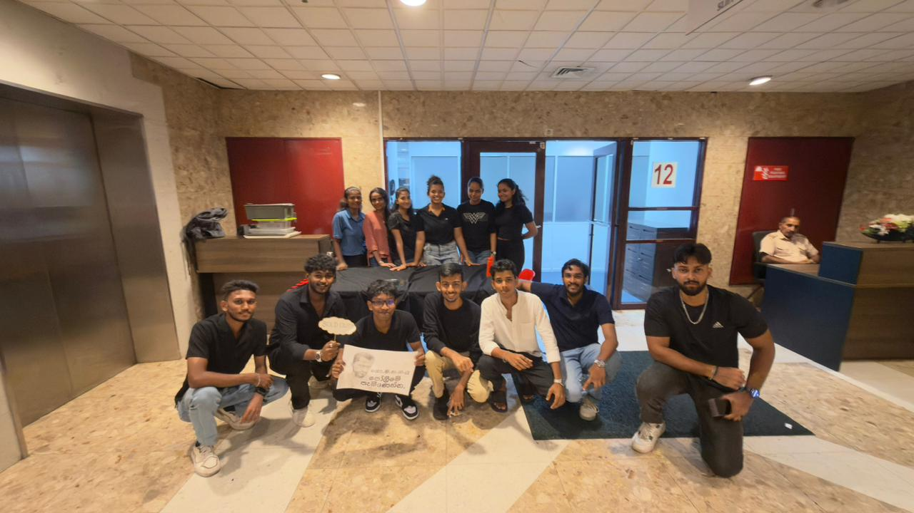
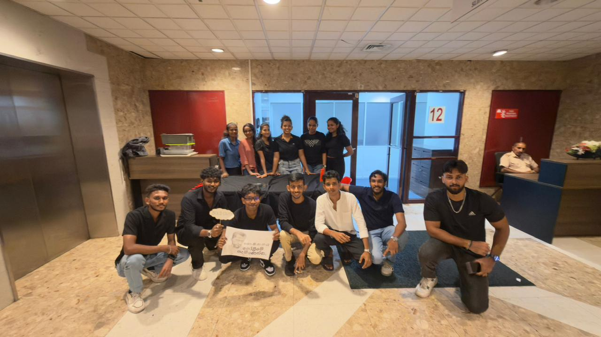

Lectures Overview
Lecture 1 - Introduction to Professional Skills
Lecturer: Mrs. Ishara Weerasinghe
What We Learned
During the lecture, we learned in detail about the concept of professional skills and why they are essential in today’s workplace. Our lecturer explained that professional skills, also known as soft skills or employability skills, are the non-technical abilities that help us to perform effectively in any job environment.
We explored several key skills, including communication, teamwork, critical thinking, problem-solving, adaptability, time management, and leadership. The lecture also highlighted the difference between technical skills, soft skills, and transferable skills, helping us understand how each category contributes to overall job performance.
We discussed how employers look for people who not only have technical knowledge but also the ability to work well with others, handle challenges confidently, and adjust to different situations. This session helped us clearly see how these skills shape professionalism and improve our chances of employment and career growth.
we learned about personal qualities such as values, beliefs, attitudes, and character.
-
Values
The core principles that guide our behaviour and influence how we make decisions.
-
Beliefs
Shape how we view the world and ourselves, affecting the way we approach different situations.
-
Attitudes
Determine whether we respond positively or negatively to people or events, influencing our interactions at work.
-
Character
Represents our moral and ethical qualities—honesty, responsibility, and respect—which create our overall reputation.
The lecture helped us see how these qualities work together to build professionalism, influence our behavior, and contribute to success in both personal and professional environments.
And finally, Lecturer discussed about the importance of Professional Skills in the workplace such as,
- Enhancing Employability
- Workplace success
- Career Advancement
What I Learned
This lecture helps me to explore and understand how professional skills are connected to personal and career development. And the Johari Window activity helps to improve my self awareness by showing my strengths and areas for improvement. This lecture helps me to improve my technical skills and nnuild my personality to become a well-rounded professional.
Skills Covered
Activities
Lecture 2 - CV Writing
Lecturer: Mrs. Ishara Weerasinghe
What We Learned
In this lecture, we learned about the importance of a Curriculum Vitae (CV) and how it serves as a critical tool for job applications. A CV is a complete document that summarizes our education, work experience, skills, achievements, and other qualifications. It is your first opportunity to make a positive impression on potential employers and plays a key role in getting shortlisted for interviews. The lecture emphasized that a well-crafted CV should be clear, concise, visually appealing, and free from errors, as these qualities help it stand out to recruiters and hiring managers.
We also learned about the importance of tailoring a CV to match the specific job you are applying for.
Tailoring involves highlighting the most relevant qualifications, experiences, and skills for the role,
whether it is a marketing position, a technical role, or another field.
The lecture explained that a tailored CV demonstrates your genuine interest in the role and shows that you have researched the company and understand its needs.
Additionally, we learned how researching the company and job description helps identify keywords that can be included in the CV, increasing its chances of passing automated applicant tracking systems (ATS) and catching the attention of employers.
And finally we learned about how to avoid common mistakes when tailoring a cv
and what are the essential CV components such as,
-
01
Personal Information
Name, contact number, email, location and professional links (LinkedIn, portfolio).
-
02
Professional Summary
A concise 2–3 line summary highlighting strengths, experience and career goals.
-
03
Work Experience
Roles, organisations, dates and 2–4 bullet points of measurable achievements per entry.
-
04
Education
Degrees, institutions, graduation years and relevant modules or honours.
-
05
Skills
Technical and soft skills (e.g., JavaScript, communication, time management). Prioritise relevant skills for the role.
-
06
Achievements & Awards
Grants, certifications, notable projects or awards with brief context and dates.
What I Learned
This lecture helps me to improve my CV writing skills, enabling me to create a more effective and tailored CV that can increase my chances of securing job interviews. And how to present my qualifications and experiences in a way that aligns with the specific requirements of different job roles. This self learning will be valuable for my future job applications and career development.
Skills Covered
Lecture 3 - Cultivating Effective Research Skills
Lecturer: Miss Ishadi Nilaweera
What We Learned
During the lecture, we learned about the purpose of research and why it plays such an important role in academic and professional work. Research paper is a formal, academic document that represent an in depth analysis of a specific topic based on independent research. We discussed how research helps us explore ideas in depth, solve problems using evidence, support arguments with reliable facts, develop critical thinking, and even contribute new knowledge to a field. The lecturer also explained the formal structure of a research paper and how each section serves a specific purpose.
Research Paper Structure
-
1
Title PageResearch title, author name, institution, date.
-
2
AbstractConcise summary of the study, methods and main findings.
-
3
IntroductionBackground, problem statement and research objectives.
-
4
Literature ReviewSummary of prior work, theories and relevant findings.
-
5
MethodologyHow the research was conducted, tools and procedures used.
-
6
ResultsPresentation of the data and primary findings.
-
7
DiscussionInterpretation of results and their implications.
-
8
ConclusionSummary of main findings, limitations and recommendations.
-
9
ReferencesList of sources used, formatted with the chosen citation style.
Each part helps present the study clearly from introducing the topic and reviewing previous studies to explaining the method, presenting findings, and summarizing the overall contribution. We also learned about the importance of writing a strong abstract, because it provides a quick yet complete summary of the entire research and helps readers decide whether the paper is relevant to them.
What I Learned
As a university student in the final years of my studies, I am required to conduct my own research and create research papers. This lecture helped me understand how to approach that process effectively. One of the key takeaways was learning how to structure a research paper properly. I also learned about the importance of writing a strong abstract, as it provides a quick and clear summary of the entire research.
Skills Covered
Activities
Activity – Analyzing Research Papers & Writing an AbstractFor the activity,
- Refer to sample research papers provided by the lecturer
- Identify the structure of each section
- Construct an abstract based on the given sample research paper
Lecture 4 - Online and Office Etiquette
Lecturer: Miss Ishadi Nilaweera
What We Learned
During the lecture, we learned about the basic etiquette required for professional communication, especially when using emails and telephone calls. We were taught that email communication is widely used in academic, business, and workplace environments because it allows information to be shared clearly, professionally, and quickly.
The lecturer explained that understanding the purpose of email communication is important because it helps us choose the right tone, structure, and level of detail depending on the message. And we learned some key rules for writing professional emails, such as:
- Include a subject and use the recipients' names and the greetings appropriately.
- Don't write in all capital letters.
- Don't use email to discuss confidential information.
- Don't use abbreviations or slang.
- Think before sending the email whether it is relevant or beneficial.
- Use proper grammar and punctuation.
- Don't forward unnecessary emails.
We also learned about telephone etiquette and how it plays a key role in creating a positive impression.
- Turn your ringer off.
- Answer important calls only; decline politely if busy.
- Activate voicemail with a professional greeting.
- Move to a private corner when taking calls.
- Avoid bringing your phone into restrooms or shared changing areas.
- Keep phones tucked away and on silent during meetings; use vibrate only if absolutely necessary.
And also to answer calls professionally, speak clearly, listen carefully, and remain respectful throughout the conversation. These communication skills are essential in both academic and professional settings, as they help build trust and ensure that messages are understood correctly.
What I Learned
This lecture helps me to realize how important it is to maintain professionalism in every message, because emails and phone calls often represent who we are before people even meet us. I learned that effective email writing requires clarity, correct formatting, and a polite tone, while good telephone etiquette depends on active listening, patience, and confidence. I also understood that communication mistakes can easily lead to misunderstandings, so being careful and respectful is essential.
Skills Covered
Activities
Lecture 5 - Facilitating and Conducting meetings
Lecturer: Miss Ishadi Nilaweera
What We Learned
During the lecture, we learned that meetings are organized gatherings where people come together to discuss information, make decisions, solve problems, or plan future activities. Meetings play an important role in workplaces because they help ensure that everyone is aligned, informed, and able to contribute ideas.
Advantages & Disadvantages of Meetings
| Advantages | Disadvantages |
|---|---|
|
Clear communication & alignment
Share updates, align priorities and ensure everyone understands decisions.
|
Time cost
Poorly planned meetings consume participants' time and reduce productivity.
|
|
Faster decision making
Enables real-time discussion and consensus on complex issues.
|
Dominance & groupthink
Strong personalities can skew outcomes; dissenting views may be suppressed.
|
|
Collaboration & relationship building
Builds trust, clarifies roles and improves team cohesion.
|
Logistics & coordination overhead
Scheduling across time zones and finding venues/tools can be difficult.
|
|
Problem solving & brainstorming
Allows immediate feedback, idea generation and rapid iteration.
|
Poor preparation reduces value
Lack of agenda or objectives leads to unfocused discussion and unclear outcomes.
|
|
Accountability & visibility
Assigns action items and records decisions for follow-up.
|
Interrupts deep work
Frequent meetings fragment concentration and reduce focus time.
|
|
Training & onboarding
Efficient way to bring new members up to speed and demonstrate practices.
|
Cost to organization
Large or frequent meetings can increase labor costs and reduce throughput.
|
Types of meetings
-
1
Annual General Meetings
A yearly gathering of shareholders to review performance and elect the board.
-
2
Extraordinary General Meetings
Called to address urgent matters that arise between annual meetings.
-
3
Board Meetings
Regular meetings of directors to oversee strategy, governance and major decisions.
-
4
Team Meetings
Frequent check-ins for progress updates, blockers and short-term planning.
-
5
Project Meetings
Focused sessions to track milestones, resolve issues and coordinate deliverables.
Another key point we learned was how to plan a meeting effectively. Proper planning involves identifying the purpose, preparing an agenda, selecting participants, deciding on the time and place, and ensuring all necessary materials are ready.
What I Learned
This lecture give me an idea about the importance of meetings and how different types of meetings serve different purposes. And during a meeting how to effectively communicate and collaborate with others to solve conflicts and set objectives to make the meeting is a productive meeting.
Activities
Lecture 6 - Writing an effective Proposal Writing
Lecturer: Miss Ishadi Nilaweera
What We Learned
During the lecture, we learned about the importance of writing an effective proposal and how it is used to present ideas, request approval, and convince stakeholders to support a project. The lecturer explained that proposal writing requires clarity, planning, and a strong understanding of the problem being addressed.
We learned that there are two main types of project proposals:
- External proposals
- Executive Summary — Containes information to convince the executive sthat company should get the contract.
- Management Section — Discusses about who working on a project, Responsibilities and roles, Proposed schedule of implementation.
- Financial Section — Budget breakdown, cost estimates and funding requests.
- Internal proposals
- Pay attention to the audience.
- Collect information about the level of involvement your audience has about the proposed work.
- Get to know the knowledge of audience.
- Gather information on the level of authority the audience has.
- Use visuals.
External proposals are submitted to outside organizations, clients, or funding bodies to seek approval, partnership, or financial support.
Components of external proposals
Internal proposals are written within an organization, usually to request resources or propose improvements
Planning the Internal Proposal
Overall, the lecture helped us understand how structured proposal writing improves communication and increases the chances of gaining approval.
What I Learned
In this lecture I learned about the importance of structured proposal writing and how it enhances communication and increases the likelihood of gaining approval for projects. I learned the key components of both external and internal proposals, including the executive summary, management section, and financial section for external proposals, as well as the importance of understanding the audience for internal proposals.
Activities
Lecture 7 - Emotional Intelligence
Lecturer: Ms. Hubika Joshi
What We Learned
In this lecture, we learned about Emotional Intelligence (EI) and how it plays an important role in both personal and professional life. We discussed that emotional intelligence refers to the ability to understand, manage, and express our emotions effectively while also recognizing and responding to the emotions of others.
The lecturer first explained what emotions are natural psychological and physiological responses to situations. We learned that emotions can be categorized into primary emotions and Secondary emotions.
Primary vs Secondary Emotions
| Primary Emotion | Secondary Emotions |
|---|---|
| Joy | Contentment, Pride |
| Sadness | Disappointment, Grief |
| Anger | Frustration, Resentment |
| Fear | Anxiety, Worry |
| Surprise | Amazement, Shock |
We also learned about emotional leakage, which happens when our true feelings unintentionally show through facial expressions, tone, or body language, even when we try to hide them.
The lecture introduced the domains of emotional intelligence and Goleman’s emotional competencies,
Self-awareness
Recognising your emotions, strengths and limits.
Self-regulation
Controlling impulses and responding thoughtfully.
Motivation
Staying driven and optimistic toward goals.
Empathy
Understanding others' feelings and perspectives.
Social skills
Building relationships, teamwork and clear communication.
Useful Social Skills
What I Learned
This lecture helps me to understand my emotions and how important emotional intelligence is in everyday interactions and decision making. Being aware of how my emotions affect my behavior and learning to manage them in a healthy way. Also learned how social skills can improve the teamwork and communication in professional environment.
Skills Covered
Activities
Lecture 8 - Survival Task
Lecturer: Mrs. Ishara Weerasinghe
What We Learned
In this activity, we were given a survival scenario where our team had to work together during a sudden blizzard at a Himalayan basecamp. As a group, we discussed the situation, reviewed the available survival items, and selected the eight most essential ones based on teamwork, leadership, safety, communication, and problem-solving. This task helped us practice collaboration, decision-making, and critical thinking while experiencing how a team operates under pressure.
SURVIVAL ACTIVITY: "Blizzard at Basecamp"
Scenario:
Your corporate team was selected for a winter leadership retreat in the Himalayas. While at basecamp, an unexpected blizzard hits, cutting off all communication and access to help. Decide which 8 of the 16 available items to take with you to survive and maintain team morale, safety, and functionality for at least 3 days. Every decision must be justified from a professional and practical standpoint (leadership, teamwork, safety, communication, adaptability).
Skills focus on:
- Leadership under pressure
- Strategic decision-making
- Role delegation
- Consensus building
- Risk management and teamwork
Group instructions:
- Form groups of 4-6 students.
- Read the Blizzard at Basecamp Scenario.
- Review the Survival Item List..
- Select ONLY 8 items as a team.
- For each selected item, justify:
- Why it's necessary
- What skill or problem it supports (e.g., communication, health, leadership,morale)
- Who suggested it
- Appoint roles: Team Leader, Recorder, Timekeeper, Presenter, etc.
- Present your team's decision to the class if time permits.
Item List (Choose 8):
- emergency thermal blankets
- Two way radios(Battery-operated)
- Energy-dense food bars
- First aid kit
- Compass
- Compass
- Rope(20 meters)
- Flashlight with extra batteries
- Journal and pen
- Corporate motivational handbook
- Firestarter kit
- Inflatable tent
- Whistle and signaling mirror
- Tablet with company presentations
- Pack of team building board games
- Mini water purifier pump
| Item Chosen | Why you Chose | What items you ignore and why |
|---|---|---|
| Emergency thermal blankets | Can retains body hear, preventing freezing temperatures. | Two-way radios - Batter can die, In a blizzard using them not reliable. |
| Energy-dense food bars | Provide high amount of calories and nutrients in a compact form. | Compass - Not useful in whiteout conditions. |
| Whistle and signaling mirror | Critical for signaling rescuers and alerting others to your location. | Corporate motivational handbook — morale help but no physical survival benefit. |
| First aid kit | Treat injuries promptly to avoid complications in the field. | Journal and pen — useful for notes but not critical for survival. |
| Rope (20 meters) | Versatile for shelter, rescue, securing gear and signaling. | Portable solar charger - No sunlight in blizzard |
| Flashlight + extra batteries | Critical for navigation, signaling and tending wounds at night. | Inflatable tent — rejected if weight/repair risk too high. |
| Firestarter kit | Enables heat, cooking and water sterilization—core survival tool. | Tablet with company presentaions - Not usefull for survival. |
| Mini water purifier pump | Provides safe drinking water — essential for multi‑day survival. | Board games - entertainment only, takes space and weight. |
What I Learned
During this activity I learned how to work as a group leader. How to separte tasks among the group members effectively complete the task. This experience helped me develop better communication, organizational skills, collaboration, and problem-solving abilities. This shows these skills matter not only in the classroom but also in real-world situations where teamwork and leadership are essential for success.
Skills Covered
Group Project — Food Stall
Story of the Rasasaraniya Food Stall
Our team decided to operate a small food stall to practice planning, teamwork and customer service. The project included menu selection, budgeting, marketing, stall layout, role allocation and a one day pop-up sale on campus. We aimed to create a low-cost, high-margin menu item and deliver consistent service while learning real-world constraints.
Team Members
-
M
M.D.M.S. RodrigoSA24610189
-
S
S.T. MadanasingheSA24610179
-
W
W.B.D.D. WijesinghaSA24610141
-
M
M.M.C.H. MapaSA24610037
-
S
S.B. WickramaarachchiSA24610042
-
I
I.H. GunasekaraSA24610044
-
H
H.N.P.G. FernandoSA24610017
-
S
S.D. RanaweeraSA24610083
-
S
S.S. KumarasingheSA24610147
-
H
H.K.N.N. KarunarathneSA24610101
-
M
M.K.A.U. PereraSA24610205
-
P
P.H.M. BimsaraSA24610080
-
W
W.K.C. ThayodhSA24610201
Objectives
-
Plan a simple menu that balances cost and taste
-
Manage a small budget and track expenses/revenue
-
Practice team roles and customer interaction
-
Learn basic marketing and on‑site operations
Planning Phase
Start of the planning phase for the food stall we created our first documents to get permission from the lecturer. After that team members started to gather and discuss about the food menu. After finalizing the menu we created a budget plan to manage our expenses. Then we divided the tasks among the team members to ensure smooth operation during the preparation days.
Initial Start


Shared our final menu among the university groups. After that, The group that was appointed to buy groceries purchased all the groceries and necessary items.
Food Fest Day
Our food stall started on October 1st at 12.30 PM. We decided to prepare the food in the morning so we could serve it fresh. However, we faced a delay because the food preparation took longer than expected, which caused us to arrive at the university around 1 PM. This resulted in having fewer customers at the start. Despite this setback, we worked under pressure, managed to finalize everything on time, and successfully sold all our food and drinks

 

What I Learned
From this experience, I learned the importance of proper time management, early preparation, and teamwork when handling tasks under pressure. It also taught me how to adapt quickly to unexpected situations and still deliver successful results.
Skills Covered